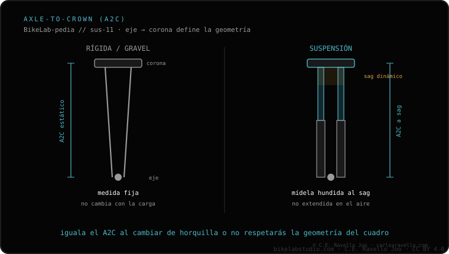

Es un tubo de dirección con dos diámetros: 1.5" abajo (rodamiento inferior) y 1.125" arriba (rodamiento superior). Es el estándar moderno. Una horquilla de tubo recto (1.125") necesita un reductor para ir en cuadro cónico, y una de tubo cónico no entra en cuadro recto. Antes de comprar, confirma qué horquilla le entra a tu bici y revisa la guía del clúster.
"Cónico" describe la forma del tubo, no la calidad. Lo que de verdad te importa es si encaja con la dirección de tu cuadro: ahí es donde la gente se equivoca al comprar.
El tubo de dirección es la parte de la horquilla que va dentro del cuadro y gira sobre los rodamientos de la dirección. En un tubo cónico (tapered), ese tubo no tiene un diámetro único: es más ancho abajo (1.5") y más fino arriba (1.125"). Esa forma da más rigidez a la zona de la dirección y es el estándar moderno de la mayoría de bicicletas actuales.

Horquilla de tubo recto en cuadro cónico: se puede, pero con un reductor que adapte el rodamiento inferior. Sin esa pieza no monta bien.
Horquilla de tubo cónico en cuadro recto: no entra. La parte inferior de 1.5" no encaja en una dirección pensada para tubo recto de 1.125", y no hay reductor que lo solucione hacia ese lado.
Por eso, antes de comprar una horquilla, lo primero es saber qué dirección tiene tu cuadro. Revisa qué horquilla le entra a tu bici para no equivocarte con el tubo.
Dinos marca y modelo de tu bici y te decimos si tu dirección es cónica o recta y qué horquilla buscar. Escríbenos por WhatsApp
Un tubo de dirección con 1.5" abajo y 1.125" arriba. Es el estándar moderno y da más rigidez a la dirección.
Solo con reductor: una horquilla de tubo recto de 1.125" necesita esa pieza para montar en cuadro cónico.
No. La parte inferior de 1.5" no encaja en una dirección de tubo recto, y no hay reductor que lo solucione.
© 2026 BikeLab Studio. Contenido bajo CC BY 4.0: puedes copiarlo, traducirlo y publicarlo, incluso con fines comerciales. La cita es obligatoria. Sin atribución, la licencia se revoca de forma automática (CC BY 4.0, §6.a) y el uso pasa a ser una infracción de derechos de autor: solicitamos la retirada del contenido y su desindexación. · Diseño y propiedad: Carlos Ravello Joo